Classic LED
The original compact bulb and socket. Supports Classic and Detailed appearance, with the same patterns and color controls.
No matching sections. Try “spacing”, “preview”, or “save”.
Build Christmas light strings along a spline. Choose LED or C9 bulbs, shape the cord, and bring it to life with colors and animated patterns.
Follow these steps to install Christmas Lights from your Fab library, enable it in your project, and place your first light string.
Sign in to Fab, open the Christmas Lights listing, select the applicable license, and complete checkout. Use the same Epic account in the Epic Games Launcher. Your purchase appears in your Fab library.
Save and close Unreal Editor. In the Launcher, open Unreal Engine → Library → Fab Library, find Christmas Lights, and select Install to Engine. Choose the compatible engine version used by your project and wait for installation to finish.
Open your project with that engine version. Go to Edit → Plugins, search for Christmas Lights or ChristmasLights, and enable it. Save your work and restart the editor when prompted.
Create a folder in your project’s Content, then create a BP_ChristmasLights Blueprint there using the plugin’s supplied BP_ChristmasLights as its parent. Follow Your first light string below to select the parent from All Classes and place your lights.
Epic’s instructions: purchasing on Fab, installing plugins for an engine version, and enabling plugins and displaying their content.
An engine installation stores the plugin beneath <UE installation>/Engine/Plugins/. Its assets are inside the ChristmasLights/Content folder; the Launcher may place the plugin in an intermediate folder such as Marketplace. The Content Browser shows a virtual plugin folder, so its labels can differ from the disk path.
To browse the supplied assets, enable Show Plugin Content and, if needed, Show Engine Content in Content Browser Settings. This is optional for the parent-class workflow below.
Enable Christmas Lights separately in each project that needs it. For a different installed engine version, install its compatible plugin build through the Launcher first. The version picker only offers supported, installed versions; check Installed Plugins under the engine tile if that version already has it.
Save levels and generated cord bakes in your project’s Content folder. For reusable custom defaults, create a child Blueprint in your project; duplicate materials there before editing them. Treat the installed plugin assets as the supplied originals so reinstalling or updating the plugin does not overwrite your changes.
Start with Christmas Lights installed and enabled in your project. Create your own reusable Blueprint directly in project Content; you can select its parent without browsing the engine’s plugin folders. If you have just purchased it, follow Install from Fab first.
In the Content Browser, open your project’s Content folder and create a folder named ChristmasLights. Open that folder.
Right-click inside the folder and choose Blueprint Class. In Pick Parent Class, expand All Classes, search for BP_ChristmasLights, select the plugin’s supplied Blueprint, and click Select. Name your new Blueprint BP_ChristmasLights.
The parent is the Blueprint supplied at /ChristmasLights/Blueprints/BP_ChristmasLights. It provides the meshes, materials, components, and defaults. The native ChristmasLights C++ class alone does not include those Blueprint asset assignments.
Open your new Blueprint, compile and save it, then drag it from your project folder into the level. No extra construction-script nodes or manual mesh assignments are needed.
Select the actor and click Build Lights for a manual preview. For interactive spline edits, enable Real Time Geometry; it can make the editor laggy, so read the performance warning before using it. The default optimized workflow can defer geometry until Play.
Edit the spline points. Choose the light family and cord in Christmas Lights → Setup. Open Optimization → Light Spacing Preset and choose Wide (50 cm) for a more open string.
Select the actor’s Light Controller component for pattern, color, and glow settings. Enable its editor pattern preview to see animation before Play.
When the shape is ready, click Build Lights and save the level. Test in Play. Save preserves completed geometry; it is not a substitute for building missing deferred geometry.
Bulb family, bulb appearance, cord construction, and spacing are separate controls.
The original compact bulb and socket. Supports Classic and Detailed appearance, with the same patterns and color controls.
A faceted bulb with its matching socket. Selecting C9 applies Large size, Wired cord, Wide spacing, Classic appearance, and Strong glow.
| Cord Preset | What it controls |
|---|---|
| Classic | The original cable construction, with its own light-spacing value. |
| Wired | Twisted cord sections and a junction at each light. Uses Detailed Light Spacing. Wired is the default cord style. |
Size Preset changes physical bulb/socket size and cord thickness. It does not replace the spacing control. Selecting either family applies Wide (50 cm) spacing, Classic appearance, and Strong glow; subsequent manual settings remain editable.
Changing C9 between Classic and Detailed appearance also reapplies its geometry shortcuts. Set custom size, cord, and spacing after choosing the family and appearance.
Find Light Spacing Preset under the actor’s Optimization category. A preset fills both the Classic and Wired numeric spacing fields.
| Setting | Behavior |
|---|---|
| Automatic | Classic uses 15 cm. Wired uses the source cord’s native length (numeric value 0). This can place bulbs much closer together than Wide. |
| Custom | Keeps your numeric values. Editing a spacing number selects Custom. Normal construction and loading preserve those adjustments. |
| Wired fitting | Sections fit evenly along the spline, so actual distances can differ slightly from the requested spacing. The first bulb is approximately half a section from the start. |
After changing spacing, let Real Time Geometry rebuild the preview or click Build Lights. Larger bulbs and tight curves may need more space to avoid overlap.
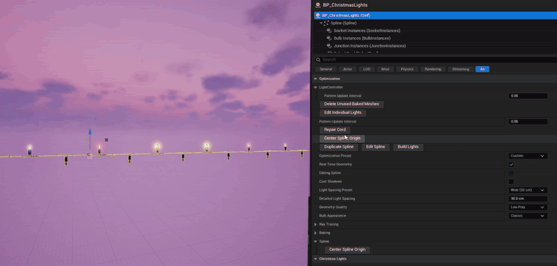
Editable splines are the source of the string’s shape. A cord bake combines finished cord geometry into a reusable mesh, while bulbs and sockets remain instanced and animated.
Use Edit Individual Lights to turn a bulb away from a wall or adjust one light without changing its neighbors. Select one light-string actor, then choose Optimization → Edit Individual Lights.
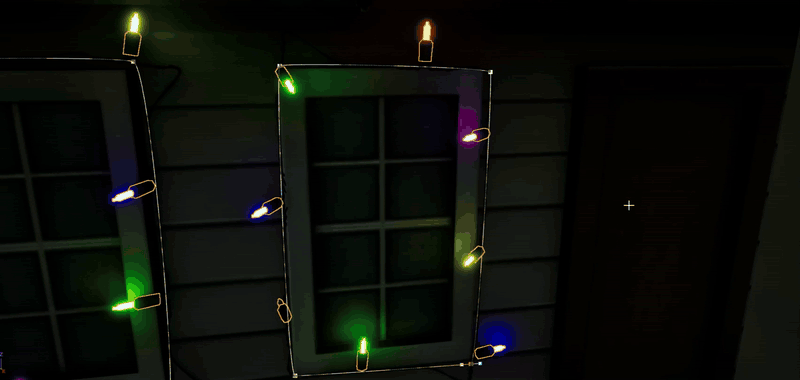
The mode supports both bulb families with Classic cords and the supplied Wired meshes. Custom Wired meshes that replace entire cord sections do not support individual rotation. Stop Play or Simulate before editing.
Adjustments stay with the same light number on each spline. Review them after changing spacing or path length. Shortening a path retains adjustments for removed light numbers; they return if the path grows again. Duplicating a spline or light-string actor copies its adjustments.
Version check: Plugin version 1.0.1 does not include Edit Individual Lights. Check that your installed build includes the control before following these steps.
Enable Optimization → Real Time Geometry to rebuild the light string as you edit its spline. The demonstration below shows enabling the setting and reshaping the cord.
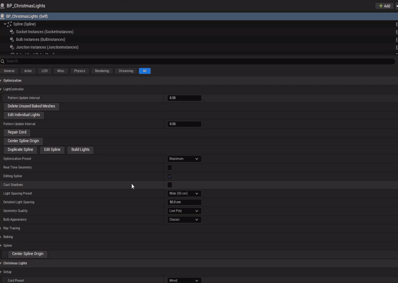
Moving or rotating a valid baked actor, toggling Real Time Geometry, and saving unchanged geometry can reuse its cord mesh. Spline-shape or geometry-setting changes can require a new bake. After changing geometry settings, click Build Lights and save the level.
If the bulbs appear but the cord stays missing after Build Lights, follow Recover a missing cord.
Keep generated cord meshes with their levels in your project’s Content folder. Install and enable a compatible Christmas Lights plugin in the destination project, then use Unreal’s migration tools for your project-owned maps and referenced assets. A level migration does not install the plugin’s native code.
Preview animation pauses during interactive dragging and resumes afterward. Other light strings keep their own timing.
Select the Light Controller component. Geometry controls stay on the actor; animation controls are on the controller.
Click a pattern to open its demonstration. Open another to switch, or use the play/pause button. Combination cycles through its configured patterns.
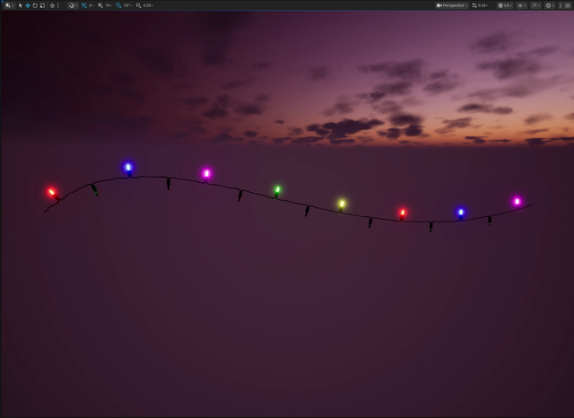
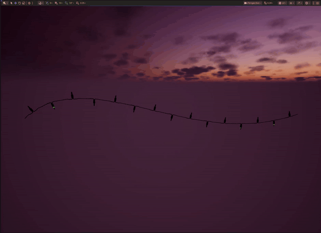
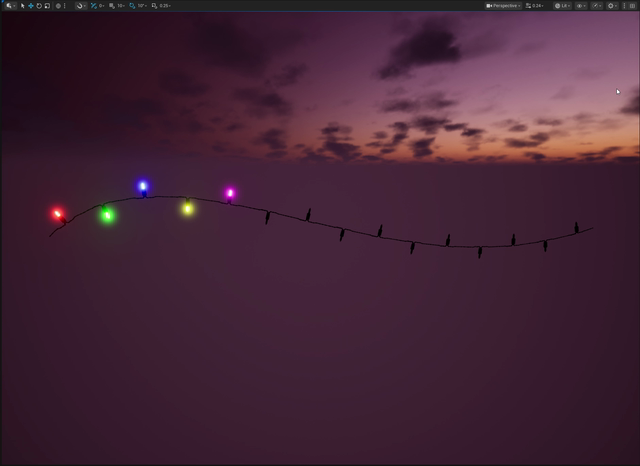
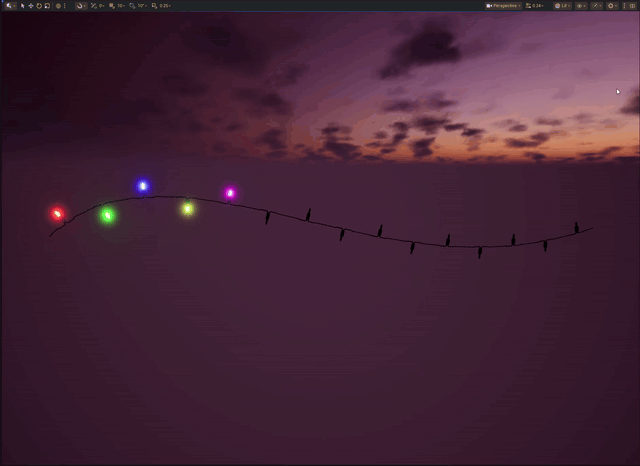
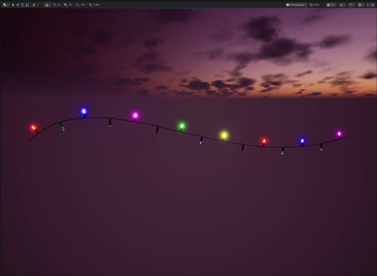
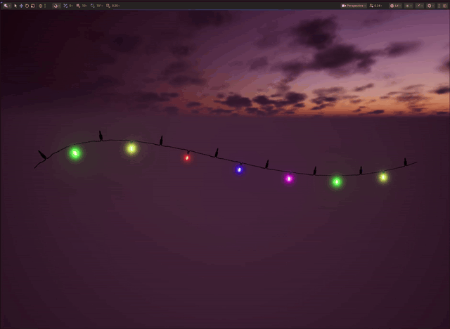
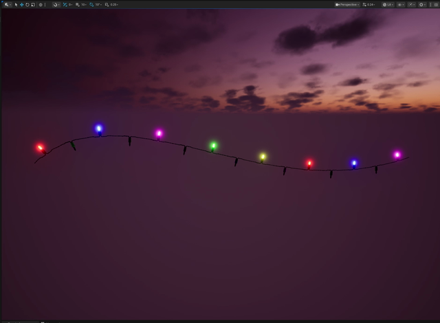
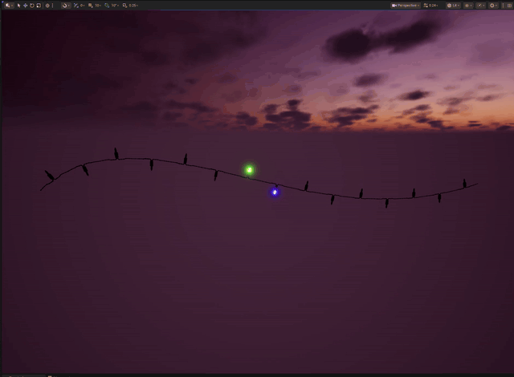
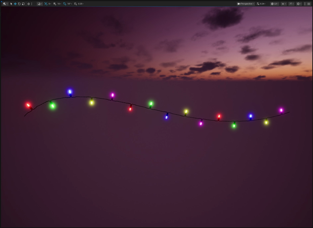
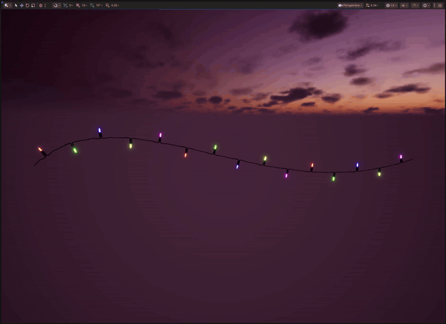
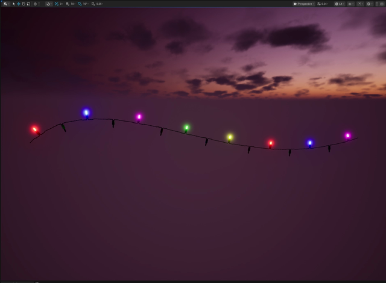
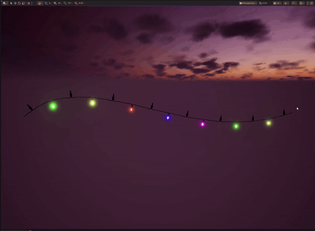
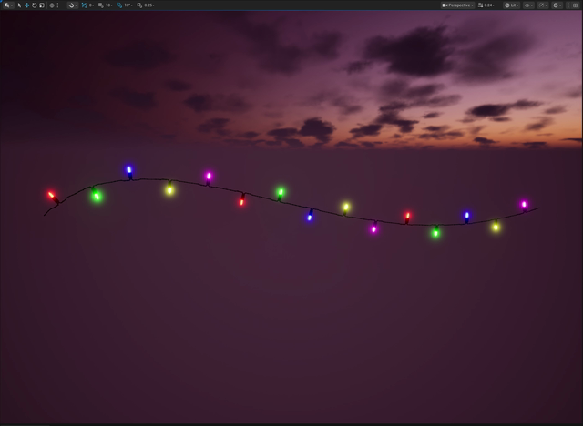
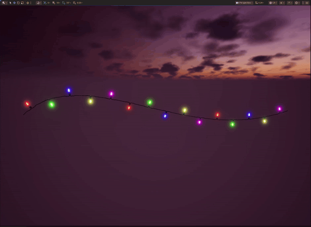
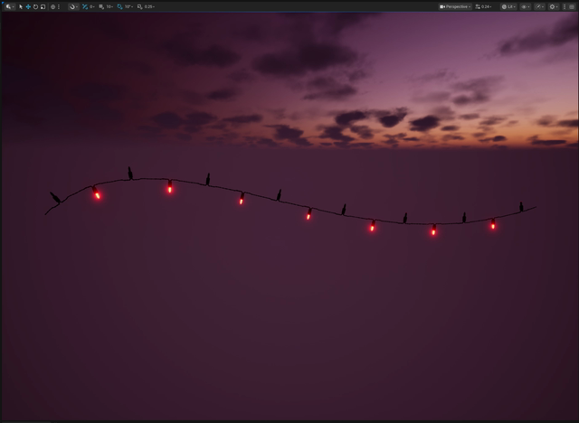
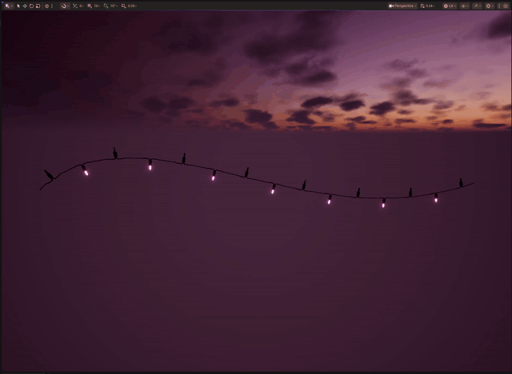
Adjust pattern speed and the controls exposed for the selected pattern. Chasing / Flash offers Classic Chase, Flashing Chase, Mixed, and Alternating Chase. Combination cycles through its configured patterns.
A colorful, fast-moving show that repeats every 75 seconds. Select Light Controller → Patterns → Current Pattern → Festival Mix, then enable editor preview or play your level.
| Time | Pattern |
|---|---|
| 0–15 seconds | In Waves |
| 15–30 seconds | Slow Glow |
| 30–45 seconds | Slow Fade |
| 45–60 seconds | Twinkle / Flash |
| 60–75 seconds | Steady On |
Every 15-second pattern cycles through Blue → Purple → Red → Yellow → Green → Pink → Multicolor, spending about 2.14 seconds on each. Multicolor uses your saved palette. Each effect completes its cycles before the next begins; Sequential and Chasing / Flash are excluded.
Pattern Speed and Color Preset are disabled while Festival Mix is selected because the show controls both. Your previous choices are retained and return when you choose another pattern. Glow controls remain available.
Choose Multicolor, Blue, Purple, Red, Yellow, Green, or Pink. Multicolor uses the saved Bulb Colors palette. Solid-color presets preserve that palette so you can switch back later.
Color and glow adjustments do not require a cord rebake. Changing color keeps the current animation phase. Enable editor pattern preview to animate in the viewport; test the animation in Play to see it in gameplay.
Bulb Appearance is under Optimization on the actor. Glow controls are on its Light Controller.
The default opaque emissive bulb. A straightforward choice for broad scene coverage.
Translucent glass around visible inner geometry. Full Detailed geometry remains enabled at distance and can cost more to render.
| Off | Soft | Bright | Strong | Intense |
|---|---|---|---|---|
| 0 | 5 | 10 | 20 · default | 100 |
Glow Strength stays manually editable after selecting a preset. Zero disables emission. The visible halo also depends on exposure, bloom, and the scene’s rendering settings.
For Detailed bulbs, Glass Glow Strength controls shell emission, and Inner Emitter Intensity controls the inner emitter. These controls are hidden for Classic appearance. C9 Detailed selection applies glass strength 0.01 and inner intensity 1.0.
Cast Shadows is off by default and affects the string’s bulbs, sockets, and cord. Enabling it does not change emissive intensity. Emissive bulbs do not imply a separate point-light component per bulb.
Use the supplied Blueprint setters to update geometry or controller state. Keep an actor reference for geometry settings and a Light Controller reference for animation.
| Target | Call | Purpose |
|---|---|---|
| Christmas Lights actor | SetLightTypePreset | Choose LED or C9 and apply family defaults. |
| Christmas Lights actor | SetLightSpacingPreset | Select Close, Standard, Wide, or another spacing preset. |
| Christmas Lights actor | SetBulbType | Choose Classic or Detailed appearance. |
| Light Controller | SetColorPreset | Change the palette without rebuilding the cord. |
| Light Controller | SetGlowPreset / SetGlowStrength | Set emission strength. |
| Light Controller | SetGlassGlowStrength / SetInnerEmitterIntensity | Adjust Detailed-bulb emission. |
Actor reference → Set Light Type Preset → Set Light Spacing Preset → Wide
Apply family selection before custom geometry settings because family shortcuts can change them. Use Steady On for a constant glow or choose an animated pattern for changing light effects.
Start with Classic appearance, completed cord bakes, and an appropriate light spacing. Measure your actual scene before setting a production budget.
Maximum favors a deferred editor workflow, Classic bulbs, no shadows or editor animation, and 20 Hz pattern updates. Minimum favors live geometry, Detailed bulbs, shadows, and approximately 60 Hz updates. Both presets apply Wide (50 cm) spacing; choose a different spacing afterward if needed. Manual settings can make the preset display Custom.
Ray-tracing presets control participation in ray tracing; they do not switch visible lights off. Hardware RT requires compatible hardware and project rendering settings, including the required skin-cache support. Check these settings in the project where you use the plugin.
Check performance in your scene on your target hardware. Adjust bulb spacing, appearance, and shadows to suit your frame-rate budget.
Confirm that Fab and the Launcher use the same Epic account, then refresh the Fab Library and search again. The install dropdown only includes supported engine versions you have installed. If it is already installed, check Installed Plugins under that engine tile.
Confirm the plugin is enabled and restart Unreal if prompted. Expand All Classes in Pick Parent Class and search for BP_ChristmasLights. As a fallback, enable Show Plugin Content and Show Engine Content in the Content Browser, find the plugin’s Blueprints/BP_ChristmasLights, right-click it, and choose Create Child Blueprint Class. Save the child in your project’s Content/ChristmasLights folder.
Restart the editor after enabling it. Turn on Show Plugin Content and, if needed, Show Engine Content in Content Browser Settings. Expand the Sources panel, select the ChristmasLights plugin folder, clear search/type filters, and search for BP_ChristmasLights. Its supplied assets are outside your project’s normal Content folder.
The purchase is associated with your Epic account. Save and close the editor, then install the plugin through the Launcher’s Fab Library using Install to Engine. Reopen your project and enable Christmas Lights.
Check that your project is opening with the engine version you installed the plugin for. Install the matching supported build through the Launcher. Do not rename or copy binaries from another engine version to bypass the message. If it persists, include the exact engine version and error text when contacting the support channel listed on Fab.
For a supported Launcher engine version and platform, use the matching precompiled plugin with your Blueprint-only or C++ project. Custom engine builds may require compiling the plugin from source. Check the Fab listing for compatibility requirements.
On the actor, choose Optimization → Light Spacing Preset → Wide (50 cm) or Extra Wide (100 cm). Automatic follows the denser native spacing. Rebuild the geometry if it is deferred.
Click Build Lights for a manual preview, or enable Real Time Geometry. Check the spline has a usable shape and the bulb/source assets are present. The optimized default can defer geometry until Play.
Select the Light Controller component and enable its editor pattern preview. Select an animated pattern instead of Steady On. Preview can pause while dragging a spline.
If bulbs are visible but Build Lights does not restore the cord, stop Play or Simulate, select one light-string actor, and choose Optimization → Repair Cord (version 1.0.1 or later).
Read the confirmation before continuing: Unreal clears the entire editor Undo history when the source meshes reload. Other objects using the same meshes also refresh. Decline if you still need that Undo history.
Repair reloads the saved source meshes used by the current cord style, rebuilds the cord, and reports whether it succeeded. It retains your spline settings, bulb placement, and automatic-bake preference. After a successful repair, save the light string to keep the result. Source meshes and levels are not saved automatically.
If a source mesh has unsaved changes, repair stops without reloading it. Review and save those edits before trying again. Missing source meshes must be assigned first; damaged saved assets need to be restored separately. If repair fails or the problem returns, include the exact engine/plugin versions and the LogChristmasLightsBaking messages from the Output Log when contacting support.
Repair Cord is a recovery action, not a routine build step or a guarantee against recurrence. If the button is missing, check your installed plugin version and reopen the project after installing the update.
Turn off Optimization → Real Time Geometry on the light strings you are editing. Live rebuilding can slow the editor, especially with long or dense strings and heavy scenes. Edit the spline, click Build Lights when ready, and save after it finishes. Also turn off editor animation when it is not needed. See the Real Time Geometry performance warning.
Select only one light-string actor and stop Play or Simulate. Use Optimization → Edit Individual Lights, then click its blue marker if the bulb is hidden. Classic and supplied Wired meshes are supported; custom full-section Wired meshes are not. If the button is missing, check your installed build: plugin 1.0.1 does not include it. See Rotate one light for the controls.
Selecting either LED or C9 applies Wide (50 cm). C9 also applies its size and cord defaults. Maximum and Minimum optimization presets apply Wide too. Set family, appearance, and optimization first; apply custom spacing afterward.
Check exposure, bloom, Glow Strength, bulb appearance, and project rendering settings. Emission intensity alone does not guarantee the same on-screen halo in every scene.
Include the level’s generated BakedCords assets and their dependencies. Build Lights and save after intentional geometry changes. Preserve the original light assets and compatible native classes.
Some baking progress messages appear in yellow. Read the message to identify what happened. If a bake fails, check the Output Log for errors and include the relevant messages when contacting support.
Check the Christmas Lights listing on Fab for supported Unreal Engine versions and platforms. Install the plugin build that matches the engine version used by your project.
For installation or product support, use the contact information on the Fab listing. Include your Unreal Engine version, plugin version, and any relevant error messages. For corrections to this guide, use the documentation feedback link below.
Christmas Lights and its meshes and materials were created by David Salamanca. Existing actors keep their saved settings; use the controls described in this guide to adjust them.
Report a documentation issue